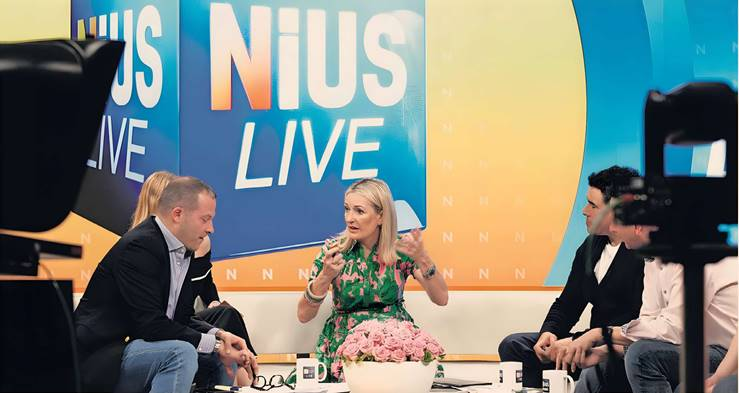

LAURA PITEL — BERLIN
Leading a tour around the Berlin offices of his rightwing online media outlet NIUS, editor-in-chief Julian Reichelt says that someone once claimed that the old brick building used to house a toilet factory. It is, he laughs, an easy metaphor for his critics.
Reichelt, a former editor of powerful tabloid Bild who fell from grace, is accused of stoking tensions over a top judge’s appointment, a controversy that has plunged the ruling coalition into crisis and raised fears that Germany is descending into US-style culture wars.
Now he is the face of an outlet that models itself on the “frontal, very tough opinion format” of Rupert Murdoch's Fox News. NIUS was one of the most active “alternative” rightwing sites that ran a deluge of negative coverage about one of three constitutional court nominees, eventually prompting the government to cancel a vote on the appointment this month.
Reichelt seems unsure whether he wants to dispute the idea of his influence on the vote or be proud of it. “I think it’s predictable and ridiculous,” he said of the notion that the decision was swung by an online campaign. “I think it’s what the left in this culture war always claims as soon as they’re losing.” But he added: “I am more than willing to take the credit for shaping the debate. And I am very proud of that. I love it.”
Founded two years ago with a yellow-orange logo and the slogan “the voice of the majority”, NIUS today has just 43 staff and fewer than 6,000 paying subscribers.
It is still lossmaking — but is bankrolled by conservative businessman Frank Gotthardt, who is also a donor to Chancellor Friedrich Merz’s Christian Democrats (CDU).
Its YouTube viewing figures suggest that it reaches around 250,000 people a day with its flagship two-hour morning live show, which features negative stories about asylum seekers, questions science on climate change and rallies against “woke” culture.
Critics say there is a kind of symbiotic relationship with the far-right Alternative for Germany (AfD), with the site echoing the party's talking points and party officials sharing NIUS content.
Reichelt says he doesn't “give a fuck” about who retweets him and that he was not collaborating with the AfD, saying: “I've never collaborated with any politician in my life.”
The site depicted constitutional court nominee Frauke Brosius-Gersdorf as a “radical feminist” who advocated for abortion up until the final weeks of pregnancy — a claim she has denied.
Growing unease within the ruling CDU led to a backlash against her nomination even though it had already been agreed behind the scenes with their Social Democrat coalition partners, eventually causing a vote in the Bundestag to be cancelled. Merz later hit out at the “unacceptable” campaign against her, which he said amounted to “massive personal defamation.”
An analysis by the political consultancy Polisphere found that NIUS published 20 negative stories about Brosius-Gersdorf in the nine days before the failed vote, homing in on the sensitive subject of abortion, which is illegal in Germany but in practice decriminalised up to the 12th week of pregnancy.
“There were false allegations and slander — and other media joined in,” said Philipp Salhoff, the company’s managing director. “The new and interesting thing about this campaign was that it was so successful.”
That assessment is not universally shared. Andreas Rodder, a historian and a conservative standard bearer for Merz’s CDU, said it was too simple to attribute the fiasco to the online media, adding that a “very broad and diverse” coalition emerged against Brosius-Gersdorf’s nomination within the CDU and its Bavarian sister party the CSU.
But one official from the Catholic Church told the Financial Times that some senior clergy felt chastened after consuming and sharing claims about the law professor that they later realised misrepresented her views. “We have to think more carefully in future about our words and how they can be instrumentalised,” the official said.
Reichelt says that he is “pro-choice” on abortion and generally “way more liberal than people would assume,” although he believes there should be a cut-off point in pregnancy when termination is no longer allowed.
Critics of the 45-year-old are deeply suspicious about the game plan behind NIUS — and Reichelt’s own personal motives.
The Hamburg-born son of two journalists, he rose to become the top editor of Axel Springer’s Bild in 2017. But he was fired four years later after facing allegations of lying to his employers over sexual relationships with junior female staff — claims that he continues to deny and battle in court.
Andreas Audretsch, a Green MP who regularly locks horns with the NIUS editor online, believes that Reichelt is driven by a “dangerous” amalgamation of both political and personal goals, fuelled by the idea that leftwing culture wars destroyed his career.
“He seems to think that, if he is able to destroy the system and the rules of our society, then something else will emerge,” he said. “And I guess he doesn’t care if this is a rightwing extremist government.”
Reichelt denied that he was seeking to destroy German democracy. “Criticising the powerful is keeping the system of democracy alive,” he said.
He said that he believes the AfD, which claimed a historic second place finish in February elections and this year was labelled rightwing extremist by Germany’s domestic intelligence agency, has a few “ugly” figures but added: “I don’t think it’s a Nazi party.”
He also believes that the pact formed by mainstream parties to avoid co-operating or forming coalitions with the AfD is “an insane concept.”
“I think we should be way more relaxed with the AfD because we're a grown democracy,” he said. “We will be able to deal with it.”
Though shunned by most mainstream politicians, NIUS has interviewed Jens Spahn and Markus Söder, senior figures from the CDU-CSU who are both on the right of the conservative alliance. Audretsch, the Green MP, said that such interviews signalled to conservative MPs “that it’s OK to talk to Julian Reichelt, that NIUS is important — and if they're launching a campaign, please start listening.”